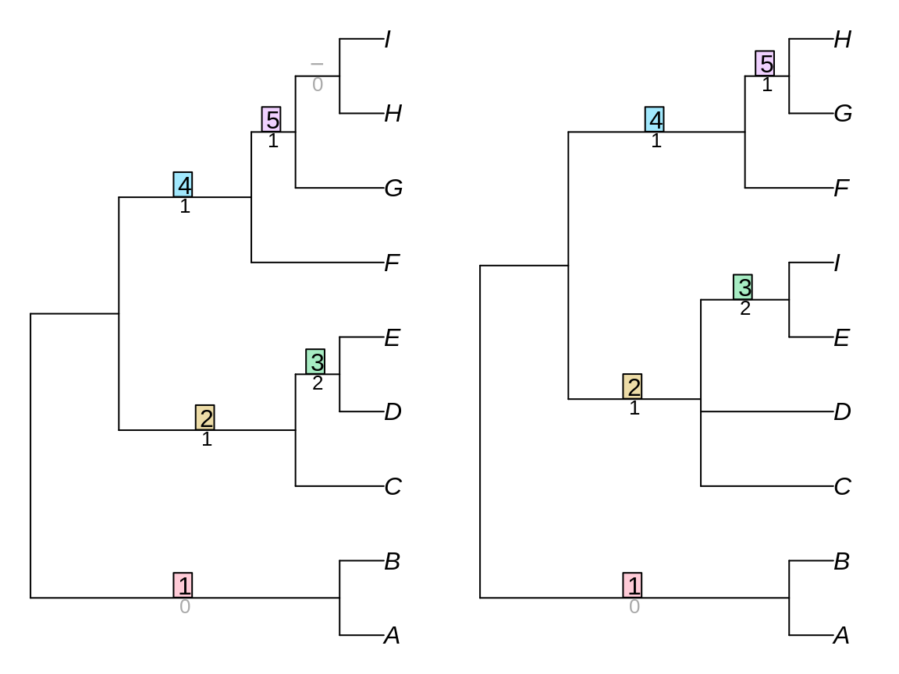

Generalized Robinson-Foulds distances
Martin R. Smith
2020-01-15
Source:vignettes/Generalized-RF.Rmd
Generalized-RF.RmdThis document outlines the similarity measures employed by the generalized Robinson-Foulds distances implemented in this package.
Before you read it, you may wish to refresh your memory of the Robinson-Foulds distance, or how to use the TreeDist package. To understand the information-based metrics, it is useful to be familiar with concepts of information.
Mutual phylogenetic information
Under the mutual phylogenetic information tree distance measure (Smith, 2019), pairs of partitions are assigned a similarity score that corresponds to their mutual phylogenetic information content.

## [1] 12.32188The phylogenetic information content of a partition is defined as the negative logarithm of the proportion of all bifurcating n-tip trees that contain that partition. Thus a more even bipartition, which is consistent with a smaller proportion of trees, contains more phylogenetic information.
The mutual phylogenetic information of two partitions is the information that they contain in common; that is, the sum of the information content of the two splits, minus the joint information (which is the negative logarithm of the proportion of trees that contain both partitions).
Consider the splits ABCDEF:GHI and ABCDEFI:GH.
library('TreeTools')
treesMatchingSplit <- c(
ABCDEF.GHI = TreesMatchingSplit(6, 3),
ABCDEFI.GH = TreesMatchingSplit(7, 2)
)
treesMatchingSplit## ABCDEF.GHI ABCDEFI.GH
## 2835 10395## ABCDEF.GHI ABCDEFI.GH
## 0.02097902 0.07692308## ABCDEF.GHI ABCDEFI.GH
## 5.574909 3.700440treesMatchingBoth <- TreesConsistentWithTwoSplits(9, 6, 7)
jointInformation <- -log2(treesMatchingBoth / NUnrooted(9))
mutualInformation <- sum(splitInformation) - jointInformation
mutualInformation## [1] 2.115477## [1] 2.115477The problem with arboreal matchings
The mutual phylogenetic information is an arboreal similarity score: that is to say, it assigns zero similarity to partitions that cannot both occur on a single tree.
This leads to problematic behaviour in certain cases: for example, when the position of two distant taxa is swapped, similarities within a tree can be obscured.
The two trees below are identical but for the position of A and J, yet receive zero similarity under arboreal metrics.
VisualizeMatching(MutualPhylogeneticInfo, matchZeros = FALSE, AtoJ, AotJ,
Plot=TreeDistPlot, leaveRoom = FALSE, prune=c(5, 18))
Mutual clustering information
Clustering information (Smith, 2019) provides a non-arboreal information-based tree distance metric. As desired, this assigns a non-zero similarity to the case that received zero similarity under an arboreal matching:
VisualizeMatching(MutualClusteringInfo, AtoJ, AotJ, matchZeros = FALSE,
Plot=TreeDistPlot, leaveRoom = FALSE, prune=c(5, 18))
## [1] 13.48339Here, each partition is viewed as clustering the terminals into two groups. Consider a pair of partitions, Y1 and Y2. If the partitions are identical, then if an observer knows which group a terminal is in Y1, then this gives all the information they need to know which group it is in in Y2. As the partitions become more different, the disposition of Y1 gives less information about the configuration of Y2; the probability that a guess based on Y1 will be correct decreases, and the mutual information decreases accordingly.
The mutual clustering information has the notable property that no pair of splits will be allocated zero similarity. As such, even a dissimilar matching (such as HI:ABCDEFG => EI:ABCDFGH below) is preferred to leaving a partition unpaired.
VisualizeMatching(MutualClusteringInfo, tree1, tree2,
Plot=TreeDistPlot, leaveRoom=FALSE, matchZeros = FALSE)
Nye et al. tree similarity metric
The Nye et al. (2006) tree similarity metric scores pairs by considering the elements held in common between subsets of each partition.
Consider a pair of partitions ABCDEF:GHIJ and ABCDEIJ:FGH. These can be aligned thus:
ABCDEF : GHIJ ABCDE IJ:FGH
The first pair of subsets, ABCDEF and ABCDEIJ, have five elements in common (ABCDE), and together encompass eight elements (ABCDEFIJ). Their subset score is thus 5/8.
The second pair of subsets, GHIJ and FGH, have two elements (GH) in common, of the five total (FGHIJ), and hence receive a subset score of 2/5.
This split alignment then receives an alignment score corresponding to the lower of the two subset scores, 2/5.
We must now consider the other alignment of this pair of partitions,
ABCDEF : GHIJ FGH:ABCDE IJ
This yields subset scores of 1/8 and 2/9, and thus has an alignment score of 1/8. This alignment gives a lower score than the other, so is disregarded. The pair of partitions is allocated a similarity score corresponding to the better alignment: 2/5.
As such, partitions that match exactly will receive a similarity score of 1, in a manner analogous to the Robinson-Foulds distance. (This is despite the fact that some partitions are more likely to match than others.) And it is not possible for a pair of partitions to receive a zero similarity score.
VisualizeMatching(NyeTreeSimilarity, tree1, tree2,
Plot=TreeDistPlot, leaveRoom=FALSE, matchZeros = FALSE)
## [1] 3.5Jaccard-Robinson-Foulds metric
Böcker et al. (2013) propose expressly prohibiting contradictory pairings, i.e. pairs of partitions that could never occur in the same tree. Such an ‘arboreal’ matching would preclude the pairing of ABCFGHI:DE with ABCDFGH:EI:
## [1] 6.333333VisualizeMatching(JaccardRobinsonFoulds, tree1, tree2,
Plot=TreeDistPlot, leaveRoom=FALSE, matchZeros = FALSE)
Böcker et al. (2013) also suggest raising the partition similarity score defined above to an arbitrary exponent. The similarity score is also doubled. By this means, the metric can be made to converge to the Robinson-Foulds metric as the exponent grows towards infinity.

Matching Split Distance
Bogdanowicz & Giaro (2012) propose an alternative distance, which they term the Matching Split Distance.
## [1] 5VisualizeMatching(MatchingSplitDistance, tree1, tree2,
Plot=TreeDistPlot, leaveRoom=FALSE, matchZeros = FALSE)
Note that the visualization shows the difference, rather than the similarity, between splits.
Similar to the Nye et al. similarity metric, this method compares the subsets implied by a pair of partitions. Here, the relevant quantity is the number of elements that must be moved from one subset to another in order to make the two partitions identical. With the pair of partitions
ABCDEF : GHIJ ABCDE IJ:FGH
three elements (F, I and J) must be moved before the partitions are identical; as such, the pair of partitions are assigned a difference score (not a similarity score) of three.
MatchingSplitDistance(read.tree(text='((a, b, c, d, e, f), (g, h, i, j));'),
read.tree(text='((a, b, c, d, e, i, j), (g, h, f));'))## [1] 3This distance is difficult to normalize, as its maximum value is difficult to calculate.
Information theoretic alternative
An information-theoretic take on the Matching Split Distance (Smith, 2019) is provided by the function
## [1] 17.27586VisualizeMatching(VariationOfMatchingSplitInfo, tree1, tree2,
Plot=TreeDistPlot, leaveRoom=FALSE, matchZeros = FALSE)
This approach scores each pair of bipartitions according to the information content of the most information-rich bipartition that is consistent with both partitions in the pair.
The most information-rich bipartition consistent with
ABCDEF : GHIJ ABCDE IJ:FGH
is ABCDE : GH, which contains
## [1] 3.169925bits of information; this quantity represents the similarity score for this particular pairing.
This measure can therefore be normalized against the phylogenetic information content of the two input trees.
References
Bogdanowicz, D., & Giaro, K. (2012). Matching split distance for unrooted binary phylogenetic trees. IEEE/ACM Transactions on Computational Biology and Bioinformatics, 9(1), 150–160. doi:10.1109/TCBB.2011.48
Böcker, S., Canzar, S., & Klau, G. W. (2013). The generalized Robinson-Foulds metric. In A. Darling & J. Stoye (Eds.), Algorithms in Bioinformatics. WABI 2013. Lecture Notes in Computer Science, vol 8126 (pp. 156–169). Berlin, Heidelberg: Springer.
Nye, T. M. W., Liò, P., & Gilks, W. R. (2006). A novel algorithm and web-based tool for comparing two alternative phylogenetic trees. Bioinformatics, 22(1), 117–119. doi:10.1093/bioinformatics/bti720
Smith, M. R. (2019). Information theoretic generalized robinson-foulds metrics for comparing phylogenetic trees. Forthcoming.